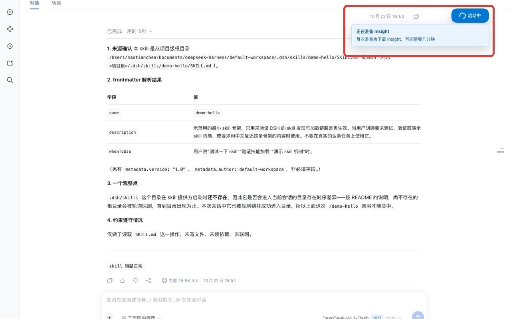
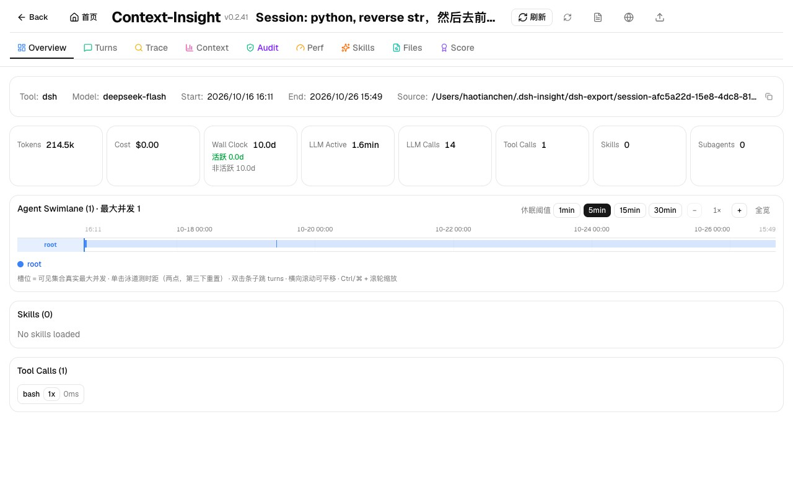
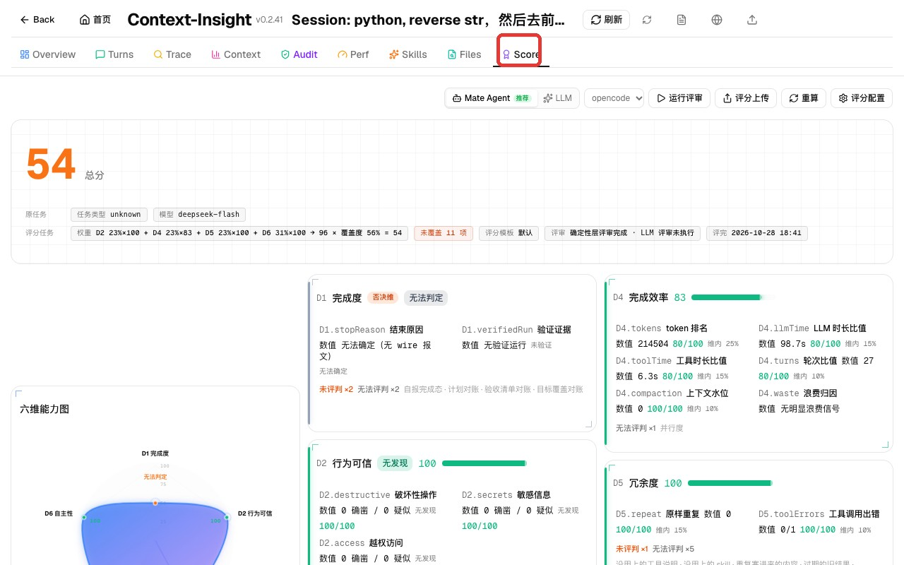
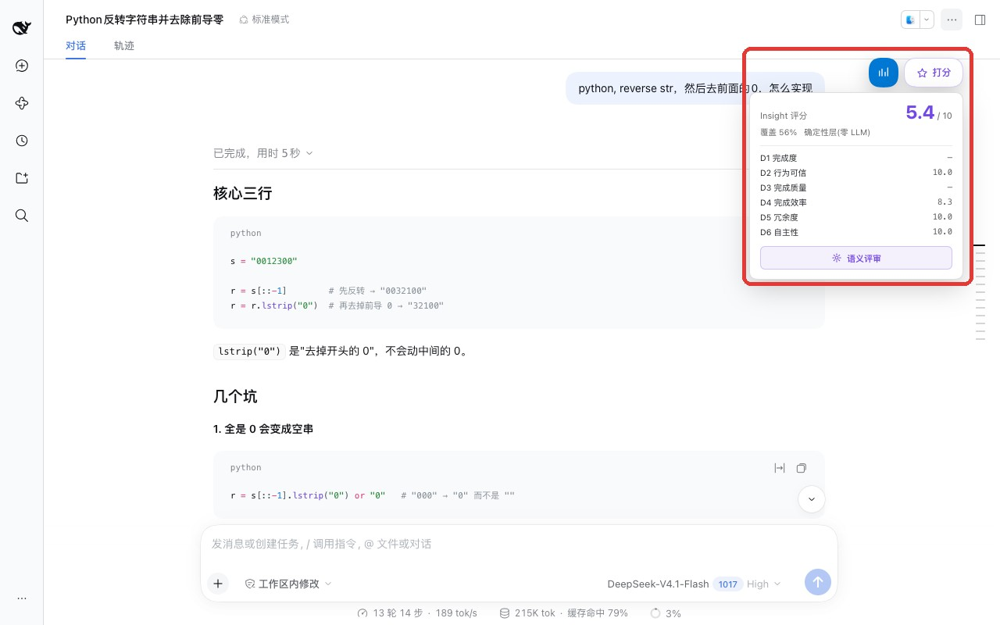
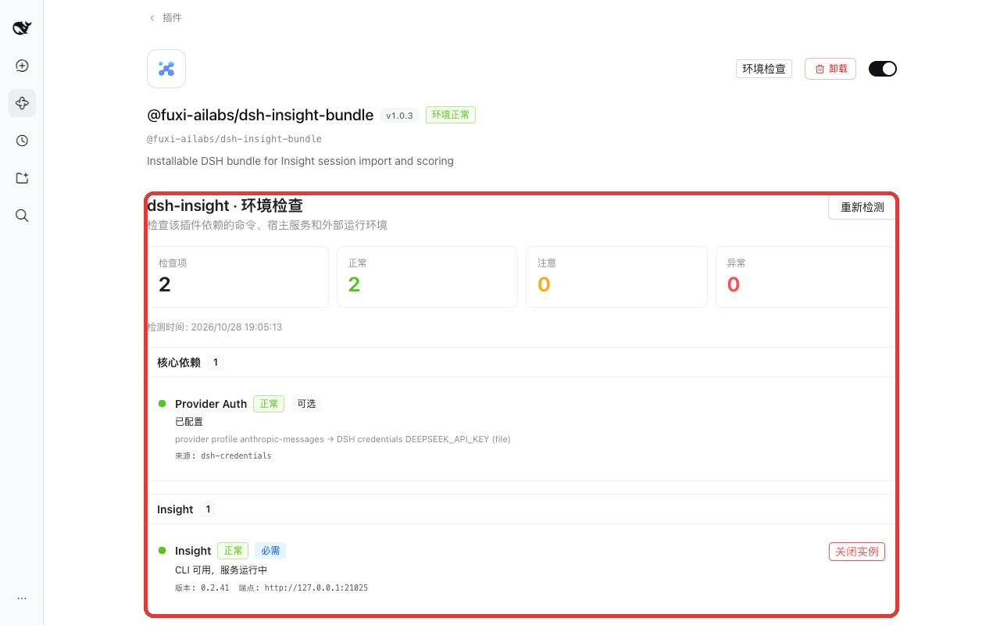

DSH PLUGIN · dsh-insight · v1.0.3
Insight
Context-Insight 是回看 Agent 会话轨迹、分析任务质量的开源工具；dsh-insight 是把它接入 DSH 的插件。安装后，插件会自动准备运行时；首次点击 Insight 时启动 Context-Insight 服务，用户可以把当前 DSH 会话导入其中，并在 DSH 查看会话评分。当任务步骤复杂、结果不确定，或想验证 Prompt / Skill 调整时，你可以在 Context-Insight 中查看执行过程、定位问题并获取评分。
Context-Insight 和 dsh-insight 是什么关系？
| 名称 | 作用 |
|---|---|
| Context-Insight开源分析工具 | 开源、本地部署的 Agent 会话分析工具。提供本地数据库保存会话与分析结果、API 供客户端接入，以及 Web 前端展示页，用于查看执行过程、维度分与评分卡。 |
| dsh-insightDSH 接入插件 | 负责准备运行时，并在首次使用时启动 Context-Insight 服务、导出并导入当前 DSH 会话，同时在 DSH 内提供 Insight 按钮、/insight、/score 和评分摘要等功能。 |
适合观察哪些运行情况？
dsh-insight 把当前 DSH 会话导入 Context-Insight，重点用于观察以下运行信息：
- Workflow 与 Subagent：查看主 Agent 如何拆解任务、派发子 Agent，以及各执行环节和结果的对应关系。
- 多轮执行与工具调用：按轮次查看用户请求、Agent 决策、工具调用、文件读写、错误和重试过程。
- Skill 使用与任务覆盖：检查 Skill 是否被触发、哪些内容参与了执行，以及任务要求是否被完整覆盖。
- 任务质量与评分：查看评分卡、维度分、否决项、覆盖度和语义评审结果。
实时更新与使用边界
Context-Insight 可以自动刷新已导入会话的数据。任务继续执行时，新产生的轮次、工具调用和 Subagent 状态会出现在分析页面中；评分不会自动重算，需要重新执行 Score 或使用 /score --recalc。
它用于观察和复盘，不会实时干预 Agent 的决策或执行。如果只需要查看会话内容、继续对话或编辑文件，可以直接使用 DSH。
1. 准备运行环境
| DSH | 0.2.1-rc.2 或同一兼容范围。 |
|---|---|
| Node.js | >=24。 |
| npm | 用于首次下载 Context-Insight 运行时，DSH 启动环境必须能找到 npm。 |
| Provider | 可选。普通读卡与重算不调用模型；只有语义评审需要可用的 Provider 凭据。 |
| Context-Insight | 无需预先安装 CLI。dsh-insight 会在后台把 context-insight@0.2.41 准备到 ~/.dsh-insight/runtime/。 |
2. 安装 Bundle
@fuxi-ailabs/dsh-insight-bundle在 DSH 插件市场中添加索引，找到 Insight · 会话导入与评分 并安装。
https://fuxi-ailabs.github.io/dsh-plugin-market/index.json也可以直接安装当前版本：
dsh plugin --profile <profile> add @fuxi-ailabs/dsh-insight-bundle@1.0.3安装完成后重启 DSH。
3. 导入第一个会话
安装完成后，从启动 DSH 到在 DSH 中看到评分，按以下顺序操作。
3.1 启动 DSH
使用你平时使用的 profile 启动 DSH：
dsh web
# 或
dsh --profile <profile>DSH 启动后，dsh-insight 会在后台检查 Context-Insight 运行时。首次使用时可能需要下载，下载期间可以继续使用 DSH。
3.2 选择会话
打开一个已有会话，或新建一个会话并完成一轮任务。会话页右上角会显示 Insight 按钮。
3.3 点击 Insight
首次点击会启动 Context-Insight 服务并等待就绪；如果运行时还没有下载完成，会先显示下载和启动进度。可以等待或切换到其他 Session，下载任务不会中断。

服务可用时，dsh-insight 会导出并导入当前会话，随后自动打开对应的 Context-Insight 会话页。

回到 DSH 会话页，右上角会出现打分 tag。点击后可以查看总分、覆盖度和各维度评分；完整的 Score 页面位于 Context-Insight。


3.4 检查运行环境
如果导入或启动失败，打开「插件」→ Insight Bundle，在配置区检查 Provider Auth、Context-Insight Runtime 和 Service 状态。这里也可以启动或关闭 Context-Insight 服务。
| 检查项 | 说明 |
|---|---|
| Provider Auth | 检查凭据来源是否已配置；仅语义评审和共享认证需要。 |
| Context-Insight Runtime | 识别自动下载的托管 CLI，也可使用 PATH 中已有的安装。 |
| Context-Insight Service | 检查服务是否可访问，并提供启动 / 关闭操作。 |

使用 CLI
以下命令不是 shell 命令，而是直接在 DSH 会话输入框中执行的 /insight 和 /score 命令，效果与页面上的 Insight 按钮和 打分 tag 等价。
/insight
/score
/score --semantic/insight 负责导入会话，/score 负责读取或计算评分；只有显式使用 --semantic 时才会调用大模型。
/insight：导入会话
导出当前 DSH 会话（默认包含子代理），导入 Context-Insight，并打开对应的会话分析页面。
/insight
/insight <sid>
/insight --no-subagents
/insight --no-open| 参数 | 用途 |
|---|---|
<sid> | 导入指定会话；不填时使用当前会话。 |
--no-subagents | 本次只导入根会话，不包含子代理。 |
--no-open | 完成导入但不打开浏览器标签页。 |
--base <url> | 本次指定 Context-Insight 地址。 |
--force | 服务不可用时仍导出会话文件；只导出，不导入。 |
--status | 只检查 Context-Insight 是否可访问。 |
/score：读取与重算评分
读取当前会话的评分卡；没有缓存时计算确定性层。默认路径不会调用大模型。
/score
/score --sid <sid>
/score --recalc
/score --no-cover常用参数
| 参数 | 用途 |
|---|---|
--sid <sid> | 读取指定会话的评分卡。 |
--recalc | 强制重算确定性评分。 |
--no-cover | 跳过本地会话与 Context-Insight 的覆盖度对账。 |
--open | 打开 Context-Insight 中对应的评分页面。 |
高级参数
| 参数 | 用途 |
|---|---|
--json | 把完整评分卡保存为 JSON，便于归档或后续自动化处理。 |
--bench <0-100> | 把外部 CANN-Bench 总分写入评分卡，用于基准或人工对照。 |
--confirm <item>=fine|problem | 人工确认某个疑似项：fine 表示确认正常，problem 表示确认有问题。 |
--base <url> | 本次指定 Context-Insight 服务地址。 |
语义评审
使用 Provider 对任务完成质量和行为进行语义评审。该命令会调用模型并消耗 token。
/score --semantic
/score --semantic --sid <sid>
/score --probe-provider执行前会先探测 Provider。凭据或模型配置不正确时，命令会返回失败原因，不会继续消耗评审 token。/score --probe-provider 只测试 Provider 连通性，不执行语义评审。
状态检查
只检查 Context-Insight 是否可访问，不导出、不导入，也不计算评分。
/insight --status
/score --status故障排查
提示找不到 npm
确认 Node.js / npm 已安装，并且 DSH 启动环境能够访问 npm。也可以在插件配置中设置 runtime.npmBin。
首次下载失败
检查网络和 npm registry，查看安装日志后再次点击 Insight 重试。已经下载的 npm 缓存会复用。
~/.dsh-insight/runtime/install.logContext-Insight 启动失败
启动失败可能来自端口占用、数据库初始化或 Prisma migration。错误会回传给浮窗，完整输出位于：
~/.dsh-insight/runtime/start.log页面没有自动打开
浏览器可能拦截了新窗口。浮窗仍会显示同步和错误状态；修复后再次点击即可。
评分提示会话未导入
先点击 Insight 或执行 /insight 重新导入当前会话，再运行 /score。
覆盖度不足
检查是否有子代理或较新的本地消息没有进入 Context-Insight。重新导入后再读取评分卡。
使用条件与限制
- 首次准备运行时需要 npm 和网络；后续启动优先复用本地运行时。
- Context-Insight 是任务完成后的分析工具，不实时介入 Agent 执行。
- 评分结果受导入覆盖度、服务版本和评分配置影响。
--semantic会调用大模型并消耗 token。- 升级 Context-Insight 服务后应重新检查导入与评分接口兼容性。